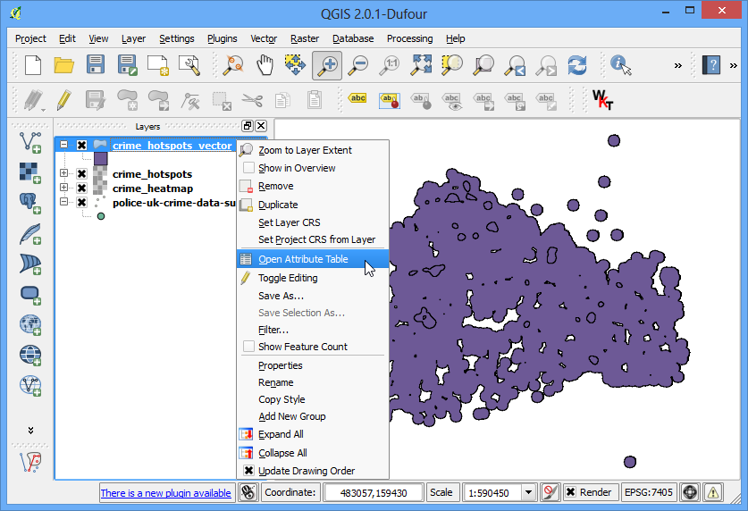

Calcolare la Lunghezza Lineare e le Statistiche
[ Download PDF A4 Letter ]
QGIS dispone di funzioni residenti che permettono di calcolare varie grandezze che si fondano sulle proprietà geometriche degli elementi, per esempio, la lunghezza, l’area, il perimetro etc. Questa esercitazione mostrerà come usare lo strumento calcolatore dei campi per aggiungere alla tabella degli attributi una colonna che indica il valore della lunghezza di ciascuna geometria.
Descrizione dell’esercizio
Useremo uno shapefile lineare delle strade ferrate del Nord America per determinare la lunghezza totale delle ferrovie negli Stati Uniti.
Altri aspetti che avremo modo di apprendere nel corso dell’esercizio
Usare espressioni per selezionare degli attributi.
Ri-proiettare un layer con il Sistema di Riferimento (SR) in Coordinate Geografiche su di un sistema di riferimento basati su Coordinate Proiettate.
Esaminare i dati statistici di un attributo all’interno di un layer.
Procedimento
Andate su

Selezionate il file appena scaricato ne_10m_railroads_north_america.zip e fate click su OK.

Nella finestra di dialogo selezionate un layer da aggiungere... scegliete il layer
ne_10m_railroads_north_america.shp.

Una volta che il layer è stato caricato, non avrete difficoltà a rilevare che è costituito da linee che rappresentano le ferrovie in tutto il continente nordamericano. Dal momento che noi abbiamo intenzione di calcolare soltanto la lunghezza lineare delle autostrade degli Stati Uniti, dovremo selezionare soltanto le linee che sono collocate nel territorio degli Stati Uniti. Tasto destro su layer e selezionate Apri tabella attributi.

Il layer ha una colonna che si chiama sov_a3. Questo attributo fornisce il codice di tre lettere che indica la nazione all’interno della quale si trova una data geometria. Possiamo usare il valore di questo attributo per selezionare tutte quelle geometrie che si trovano negli Stati Uniti.

Nella finestra Tabella degli Attributi fate click sul pulsante Seleziona elementi usando un’espressione.

Una nuova finestra di dialogo che si chiama Seleziona per espressione verrà immediatamente aperta. Trovate l’attributo sov_a3 sotto Campi e Valori nella sezione Lista delle funzioni. Fate doppio click su SOV-a3 per passarlo nell’area di testo in basso Espressioni dedicata al calcolo delle espressioni. Completate l’espressione scrivendo "sov_a3" = 'USA'. Fare click su Seleziona e poi su Chiudi.

Tornate sulla finestra principale di QGIS e vedrete che tutte le linee che cadono nel territorio USA sono state selezionate e vengono rappresentate in giallo.

Ora salviamo la nostra selezione in un nuovo shapefile. Fate click sul tasto destro del layer ne_10m_railroads_north_america e selezionate Salva la selezione con nome....

Comparirà la finestra di dialogo Salva i vettori come... Nominate il file di output con il nome di usa_railroads.shp. Intendiamo anche modificare il sistema di riferimento delle coordinate del layer. Nella casella sist rif fate click su Sfoglia.
Nota
Per default la funzione residente che utilizza le geometrie degli elementi per fare i calcoli usa le unità di misura del SR del layer su cui stiamo lavorando. Ma i Sistemi di Riferimento che usano coordinate di tipo geografico, come per esempio EPSG:4326, hanno come unità di misura i gradi - in tal modo la lunghezza delle polilinee verrebbe ad essere misurata in gradi e l’area in gradi quadrati - che è un evidente non senso. Per fare un siffatto calcolo abbiamo allora bisogno di un Sistema di Riferimento che si basi su delle coordinate geografiche di tipo proiettato, tali che abbiano come unità di misura i metri oppure i piedi.

Dal momento che siamo interessati a calcolare la lunghezza, andiamo a scegliere una proiezione di tipo equidistante. Nella casella di ricerca Filtro digitate il testo north america equ. Nel risultato che verrà presentato in basso selezionate North_America_Equidistant_Conic EPSG:102010 come Sistema diRiferimento. Fate click su OK.

Tornati nella finestra Salva i vettori come... barrate la casella Aggiungi il file salvato alla mappa e fate click su OK.

Una volta che il processo di esportazione è concluso, vedrete un nuovo layer sa_railroads caricato in QGIS. A questo punto dovete de-selezionare la casella vicina a ne_10m_railroads_north_america per spegnere il relativo layer, dal momento che non ne avremo più bisogno.

Fate click con il tasto destro sul layer usa_railroads e selezionate Apri Tabella degli Attributi.

E’ il momento di aggiungere una nuova colonna che fornisca la misura della lunghezza di ciascuno degli attributi. Portate il layer in modalità di Modifica (o di editing) facendo click sul pulsante Modalità Modifica . Una volta entrati in modalità modifica fare click sul pulsante Calcolatore Campi.

Nella finestra calcolatore campo`spuntate la casella :guilabel:`Cre un nuovo campo. Inserite poi il nome length_km alla voce Nome del campo in output. Scegliete Decimal number (real) come Tipo dati in uscita . Portate poi il valore della casella Precisione a 2. Sotto Lista funzioni trovate l’attributo $length all’interno della categoria Geometria. Doppio click per aggiungere questa voce nello spazio sottostante Espressione. Completate l’espressione nel modo seguente: $length / 1000. Questo perché il nostro sistema di riferimento ha l’unità di misura in metri e noi vogliamo il nostro output in km. Click su OK.

Tornate nella Tabella degli Attributi, e vedrete che si è aggiunta una nuova colonna length_km. Click su modalità di modifica per uscire dalla modalità di editing e salvare i cambiamenti realizzati nella tabella degli attributi.

Ora che abbiamo la lunghezza di ciascuna singola linea del layer possiamo finalmente addizionarle tutte e trovare la lunghezza Totale. .

Selezionate come Vettore in input il layer usa_railroads. Scegliete il Campo di destinazione come length_km e fate click su OK. Vedrete apparire vari risultati statistici. Il valore Somma sarà il dato che stavamo cercando, cioè la lunghezza totale delle ferrovie degli USA.
Nota
Questo risultato può variare leggermente quando vengono scelte delle proiezioni differenti. Nella pratica, le lunghezze delle linee ferroviarie o delle strade, come altre geometrie lineari, vengono misurate direttamente sul suolo e in seguito vengono inserite come attributi nel dataset. Si ricorre al metodo usato qui solo in assenza di tali misure sul campo e solo come approssimazione generica della reale lunghezza delle linee.